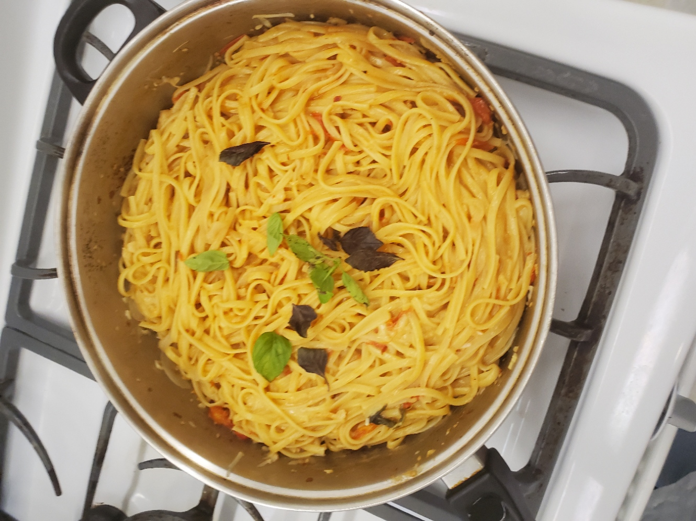

One Pot Pasta
My Cooking:

Ingredients
- 12 ounces linguine
- 12 ounces cherry or grade tomatoes, halved or quartered if large
- 1 onion, thinly sliced (about 2 cups)
- 4 cloves garlic, thinly sliced
- ½ teaspoon red-pepper flakes
- 2 sprigs basil, plus torn leaves for garnish
- 2 tablespoons extra virgin olive oil, plus more for serving
- Coarse salt and freshly ground pepper
- 4 ½ cups water
Directions
- Combine pasta, tomatoes, onion, garlic, red-pepper flakes, basil, oil, 2 teaspoons salt, ¼
teaspoon pepper and water in a large straight-sided skillet. Bring to a boil over high heat.
- Boil mixture, stirring and turning pasta frequently with tongs, until pasta is al dente and
water has nearly evaporated, about 9 minutes.
- Season to taste with salt and pepper, divide among 4 bowls, and garnish with basil. Serve
with oil and Parmesan.
Return to main page.